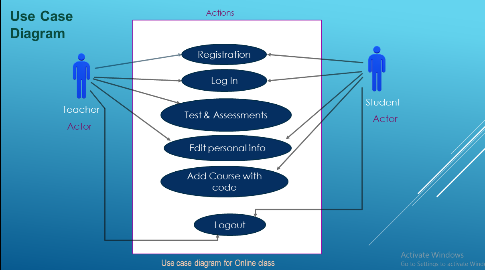
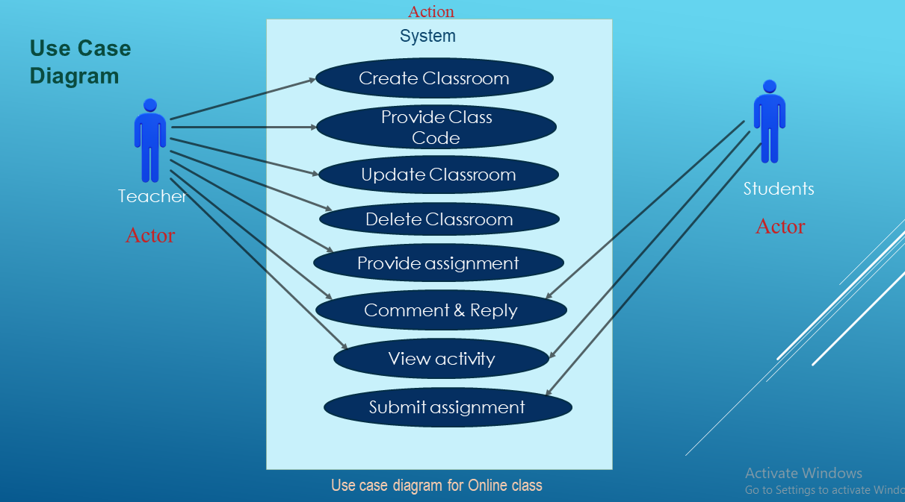

1.1 Purpose
1.2 Document Conventions
1.3 Intended Audience and Reading Suggestions
1.4 Product Scope
1.5 References
2.1 Product Perspective
2.2 Product Functions
2.3 User Classes and Characteristics
2.4 Operating Environment
2.5 Design and Implementation Constraints
2.6 User Documentation
2.7 Assumptions and Dependencies
3.1 User Interfaces
3.2 Hardware Interfaces
3.3 Software Interfaces
3.4 Communications Interfaces
4.1 System Feature 1
4.2 System Feature 2 (and so on)
5.1 Performance Requirements
5.2 Safety Requirements
5.3 Security Requirements
5.4 Software Quality Attributes
5.5 Business Rules
Appendix A: Glossary
Appendix B: Analysis Models
Appendix C: To Be Determined List
The purpose of this document is to explain details about the Online Class Management System.
The purpose of this SRS document is to provide a detailed overview of our software product, its parameters and goals.
This document describes the project's target audience and its user interface, and software requirements.
The fonts that are used in this SRS are Times New Roman and Sans-Serif.
No fonts contain any special signatures. every requirement statement is to have its own priority
This document is intended for developers
project managers, marketing staff, users, testers, and documentation writers.
The purpose of this software will be an online class room facility for both teachers and students.
Teachers and students will be able to do many tasks. Teachers will be able to keep track of students
assignments, reading materials and other tasks. Teachers will be able to create create class rooms and
will be able to send invitation codes. Students will be able to join, view profile and other stuffs
The software system will have face recognition system to check if the student is actually him/her.
This is a new, self-contained product. This system can be used to track a students progress.
The major functions of the system:
There are three user classes:
List of Constraints:
The system is designed to be user friendly. The user can go through the user manual and online video tutorials.
#Yet to be figured out#
#To be decided#
The dashboard is shown. There is login option for teacher and student. Both will see added course, courses can be selected. As a course is selected, it will enter the class. There will also have an option to upload reading materials.
face detection, local facial detection library. To make the app fast and stable, Firebase database will be used to store the data and sync properly through APIs. A Security system will be added.
Class codes will be sent to emails and sms, student and teachers can register with email or facebook accounts
 
(1) Use case name: Register
Actor(s): Faculty/Student
Type: Primary
Brief Overview: Faculties/Students can regsiter by choosing this
option using their email address and password.
| Actor Actions | System Response |
|---|---|
| 1. Actor visits the website | 2. System shows the homepage of the website |
| 3. Actor clicks the Register and registers with name, email and password | 4. System receives the valid inputs and creates an account |
1.1 The actor visits the wrong website.
2.1 The system does not show the homepage
3.1 The actor does not register with valid username, email, password.
4.1 The system shows error while receiving.
(2) Use case name: Login
Actor: Faculty/Student
Type: Primary
Brief Overview: Faculties/Students can LogIn using registered email and password.
| Actor Actions | System Response |
|---|---|
| 1. Actor presses the login button | 2. System views login page |
| 3. Actor enters email and password then presses login button | 4. System checks and lets the user log-in showing the dashboard |
3.1 User enters wrong email and password.
(3) Use case name: Create Classroom
Actor: Faculty
Type: Primary
Brief Overview: The Faculty can create the classroom by clicking the create classroom
button, which automatically creates a classroom code via which students
students can enroll in a class.
| Actor Actions | System Response |
|---|---|
| 1. Faculty presses the create classtoom button | 2. System receives the request and processes and creates classromm with code |
| 3. Student receives the code and enter the classroom | 4. System checks and matches the code and lets the student enroll |
1.1 Faculty is not being able to create classroom
3.1 Student not receiving codes.
(4) Use case name:Comment and Reply
Actor: Faculty/Student
Type: Primary
Brief Overview: The student and faculty can both comment and reply in a
specific topic or assignment.
| Actor Actions | System Response |
|---|---|
| 1. Student comments on a certain task or topic given by the faculty clicks comment. | 2. System receives and stores it to the databse. Faculty can see the comment. |
| 3. Faculty replyes pressing the reply button. | 4. The system receives the reply stores it to the database which is seen by the student. |
1.1 Student is not being able to comment.
3.1 Faculty is not being able to reply.
(5) Use case name: Assignment
Actor(s): student/faculty
Type: Primary
Brief Overview:
Students are assigned tasks by the faculties the students can
download the file.
| Actor Actions | System Response |
|---|---|
| 1. The faculty assigns a task to the students | 2. Adds the assigned task into the system |
| 3. The students Download the assigned task |
1.1 Faculty couldn't assign the task
3.1 Couldn't download the task.
The system should be able to take pictures, process facial recognition .
# Will be added#.
We will to build a web-based application and an adroid app.